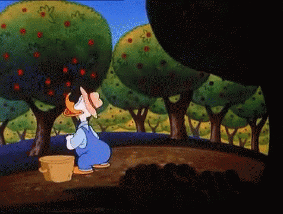
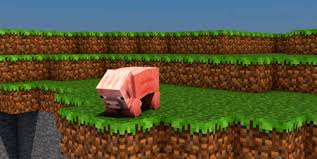

Popular Post

New ways to cultivate

Gardering techiques

Green Technologies
New ways to cultivate
Gardering techiques
Green Technologies
Organic farming is an alternative agricultural system which originated early in the 20th century in reaction to rapidly changing farming practices. Organic farming continues to be developed by various organic agriculture organizations today. It relies on fertilizers of organic origin such as compost manure, green manure, and bone meal and places emphasis on techniques such as crop rotation and companion planting. Biological pest control, mixed cropping and the fostering of insect predators are encouraged

Smart Farming is a farming management concept using modern technology to increase the quantity and quality of agricultural products. Farmers in the 21st century have access to GPS, soil scanning, data management, and Internet of Things technologies. By precisely measuring variations within a field and adapting the strategy accordingly, farmers can greatly increase the effectiveness of pesticides and fertilizers, and use them more selectively. Similarly, using Smart Farming techniques, farmers can better monitor the needs of individual animals and adjust their nutrition correspondingly, thereby preventing disease and enhancing herd health.

Camping near Mumbai, camping in Lonavala, camping near Pune, camping in Matheran, camping in Mahabaleshwar, beach camping—if you've ever searched these key words on Google or any other search engine you have come to the right place. What's on your mind? Do you plan to catch up with friends, spend quality time with kids, or just want to get away from the concrete jungle? We offer treks where you can discover paths less trodden and rejuvenated your mind. Want to throw birthday parties with a twist and surprise? You've come to the right place then